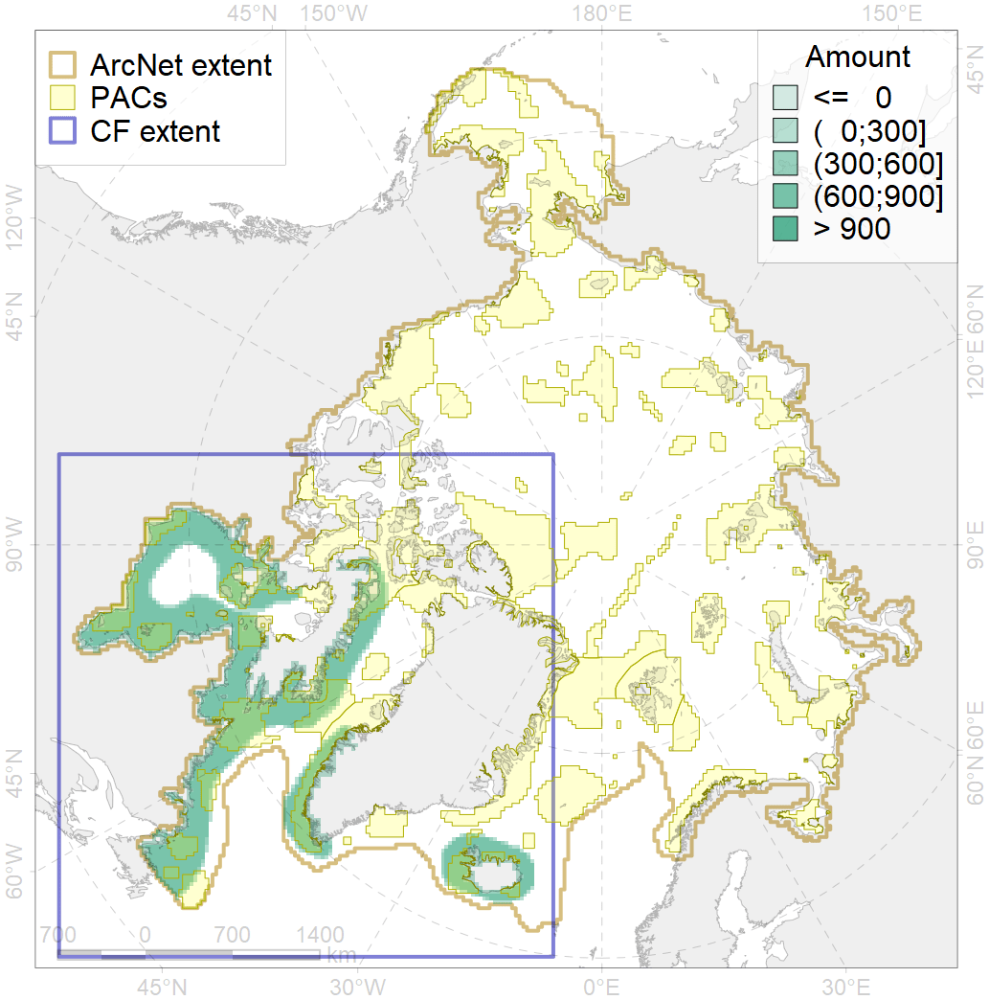
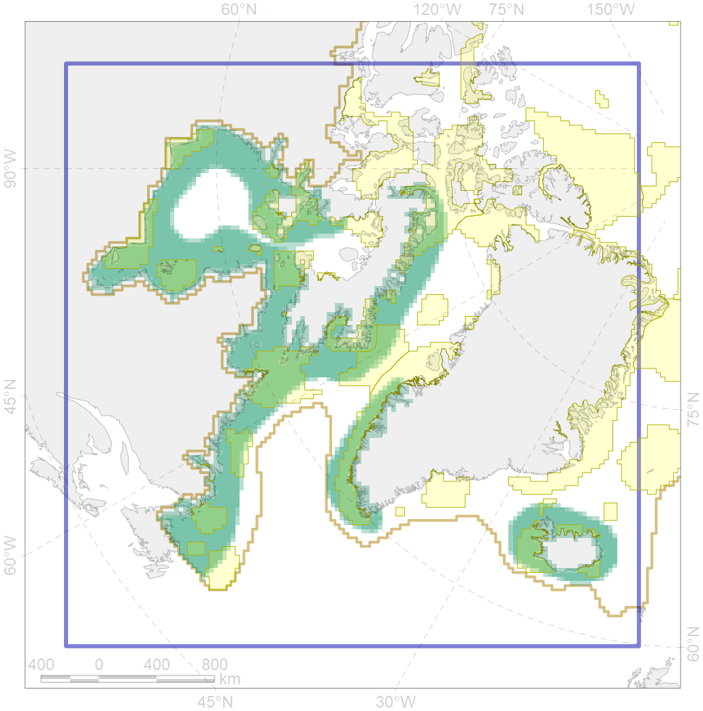

2019

| CF ID | 2019 |
| CF Name | Harbour seal range in the North Atlantic region |
| Time Period | Varies by dataset |
| Source(s) | NPI IUCN Red list |
| Seasonality | May-July |
| Depth Horizon | 0-50m |
| Methodology | Data assembled from multiple datasets |
| Author Name | Irina Trukhanova |
| Notes | Terrestrial pupping within range, exact locations not shown |
| Conservation Target Set in the Scenario | 0.06 |
| Conservation Target Achieved in the Scenario | 0.395 (Scenario: 657.9%) |
| PAC ID | Proportion in the PAC | Contribution to ArcNet Target Achievement | PAC’s Contribution to the Achieved Target |
|---|---|---|---|
| 37 | 0.2% | 1.6% | 0.2% |
| 38 | 2.5% | 34.5% | 5.2% |
| 39 | 0.5% | 7.9% | 1.2% |
| 40 | 0.1% | 1.5% | 0.2% |
| 41 | 0.5% | 5.1% | 0.8% |
| 44 | 5.1% | 78.3% | 11.9% |
| 45 | 2.7% | 40.7% | 6.2% |
| 46 | 1.7% | 26.0% | 4.0% |
| 50 | 0.2% | 2.6% | 0.4% |
| 52 | 2.4% | 39.3% | 6.0% |
| 66 | 0.1% | 1.4% | 0.2% |
| 67 | 3.0% | 44.3% | 6.7% |
| 68 | 0.3% | 3.1% | 0.5% |
| 69 | 1.6% | 24.2% | 3.7% |
| 70 | 2.9% | 43.0% | 6.5% |
| 71 | 2.4% | 37.0% | 5.6% |
| 72 | 0.3% | 2.7% | 0.4% |
| 73 | 1.9% | 28.5% | 4.3% |
| 75 | 0.0% | 0.2% | 0.0% |
| 76 | 5.9% | 89.0% | 13.5% |
| 77 | 1.5% | 22.5% | 3.4% |
| 78 | 0.0% | 0.4% | 0.1% |
| 79 | 2.0% | 26.3% | 4.0% |
| 80 | 0.6% | 7.9% | 1.2% |
| 81 | 0.6% | 5.6% | 0.8% |
| inner | 39.1% | 573.7% | 87.2% |
| outer | 60.6% | 84.2% | 12.8% |